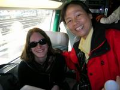
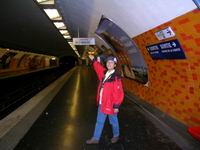
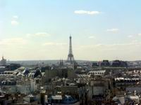
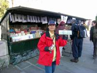
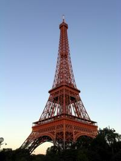
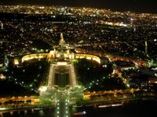

2003年9月24日 初探巴黎
龐畢度現身，ㄧ償宿願觀究竟；
聖母院露臉，鐘樓怪人不復現。
巴黎鐵塔出，數當今誰與爭鋒；
夜遊塞納河，二岸夜景有淵源。
TGV 火車上
|  |
| 在里昂至巴黎的TGV子彈列車上，會畫圖的朋友就在車上為外國朋友素描，那份純摯的友誼與笑容是人間最美麗的花朵。 |
參加這趟法國單車之旅，首段行程自九月十三日至九月二十三日，經歷十天的法國單車之旅行程在里昂完滿結束，今天要啟程直奔巴黎。
早上將要拖著沈重的行李往里昂車站搭車前進巴黎，這二天在里昂 Shapping 的成果，讓我們的行李增加了一個袋子，想到要提著這些行李爬樓梯，就有點手軟。
在未出發前，看到朝陽照在里昂火車站，那份在此過二夜的情份，讓我不禁右手摸向口袋拿出小畫本，快速的畫下由旅館望向車站的光影。
這趟火車之旅是搭雙層車廂的法國子彈列車 TGV ，時速高達每小時 300 哩，我們的位置被安排在上層，登高望遠看到好景色，想畫下那經過耕犛而成幾何圖樣的的坡地，但一瞬間，影像飛逝而過，實在無法再等看第二眼，如此，我只好畫下那第一眼印像的感覺，我想這真是名符其實的「印象畫」，就好像脫了韁的野馬，心思就在那畫紙上隨意發揮。感覺上我們和印象大師莫內愈來愈近了，哈哈！
為了好打發時間，在火車上做人像素描練習，是最佳時機，乘客靜坐在位置，只要不是動作太多，可在其不注意下快速畫下線條，這不禁讓我想起上次在奧地利火車上畫的巴伐利亞旅人的經驗，真可為旅行留下難忘的回憶。
我找好目標，她是一位坐在後座靠窗的漂亮女孩，認真看畫的神情是個好模特兒，於是我與對面的朋友換坐位，好正面觀察。在我下車前鼓起勇氣，拿畫請她簽名─ MAREI ，她笑著說畫得很好，感謝她的慈悲，我是覺得畫得不夠俐落，沒有把她的氣質畫出，倒是另一張，畫坐在她一旁正在打呼的老外，比較有趣味。
初嚐巴黎自由行
再度來到巴黎，十天前由台灣來到法國時，第一站就是巴黎，上次由巴黎的里昂車站往法國南方出發至勃根地省騎單車，這次是由南方再回來，到了巴黎已近午時，為了把握時間玩遍巴黎市區，在遊覽車上，我們開始吃起手邊的零食存貨，午餐自理，省時又省錢，把時間留出來參觀，車子把我們載到巴黎市區的邊界，看到了二支大煙囪，看來已近工業區，旅館─ TULIP INN 就在巴黎市中心靠東邊界，這是我們要住三天的地方。
在旅館的大廳，大家先做好功課，把這幾天的行程做一個規畫，讓年輕人帶隊，老人跟著走，這樣會輕鬆些，隊裡 50 歲以上就是老人，我也不例外。
女領隊季玫和男領隊子瑋為了怕我們這群沒到過巴黎的老弱婦孺，流落到巴黎，迷失在塞納河畔，先帶我們到最靠近旅館的地鐵站─ Liberte ，告訴我們坐地鐵的方法，就這樣大家人手一張三日週遊券和地圖，各自出發尋訪這聞名的花都。
沒有冷氣的地鐵
|  |
| 搭乘過台北捷運來搭乘巴黎的地鐵，應該是不難的事。只是某些巴黎地鐵充滿文化氣息是台北捷運所欠缺的。 |
Metro 這是法國地鐵的名稱，由於前陣子法國熱死上萬人，所以我對這個死亡原因一直很好奇，特別觀察一下，坐在巴黎最方便的交通工具上，似乎可找到一些蛛絲馬跡，想想在台北的捷運是人們夏天最好的去處，不論在捷運站或是車上，那超強的冷氣，會讓你暑氣全消，而這裡的地鐵，沒有冷氣，只有靠著打開著窗子通風，難怪天氣一熱，加上尖端時間的擁擠人潮，真會熱死人，還好我們來到時天氣已轉涼，為了怕晚上回去會冷，大家還都穿著大外套哩！
這裡地鐵每一站停留的時間都很短，坐 MO:8 到了 Republigue ，要轉 MO:11 至龐畢度中心時，後到的同伴趕到要上車時，車門已將要關上，大家衝進車廂，但殿 後的張 老師，一不小心，背包被夾在車外，在大家合力的拉扯下，才脫離困境，真是有驚無險，否則將會在明日巴黎報紙的社會版刊登─有一位來自台灣的遊客被地鐵門夾傷......。
現代感十足的龐畢度文化中心
| 龐畢度文化中心前的街頭畫家正在為少女寫生，大致上願意寫生的都是妙齡少女，也許這正是他們自身對生命與容顏充滿自信的時候。 |
|  |
| 由龐畢度中心頂樓瞭望巴黎有是個好主意，終於看到了！巴黎鐵塔！好興奮！巴黎蔚藍的天空總是配上白雲朵朵。 |
步出地鐵，走一小段，我們的領隊─王舜民，看到前面一棟紅紅綠綠的建築，告訴我們到了，我真看不出這個有紅、有綠、有藍通管外露的建築，就是有名的現代藝術殿堂─龐畢度文化中心，白色的喇叭型通管，排列站立一旁，總感覺會從那裡會發出聲音來，但聽說那是冷氣的通口，在回來查看書本之後，才知這間讓外界議論的建築，把所有的通路管路都放在外面，紅色是電梯與扶梯；綠色是水管；藍色是通風管；黃色是電力線管。
從旁邊的道路走進，看到一個大水池，池中有一些色彩鮮明的動物雕塑，這是「史特拉汶斯基廣場」，池邊坐滿了遊客，熱鬧的場面與在一旁的寧靜教堂有點天壤之別，坐在教堂旁的台階，拿出背包內準備的水果，就這樣很悠閒輕鬆的解決了「飯後水果」，趕緊背起背包加快腳步朝現代藝術奠堂─龐畢度文化中心走去。
由前門繞道到後面的廣場，我們對這奇特建築的外型先做一個巡禮，寬廣的斜坡廣場上人們三三兩兩斜躺在地上，享受著溫昫的陽光，一些藝術家也聚集在此處，為遊客畫人像，有些是以誇張的手法，將模特兒最有個性的部位，誇大表現，真是不簡單。二、三個為一組，有人負責拉生意，有人負責畫，幾位東方臉孔的畫家走過來，一手拿著作品介紹，以大陸的口音詢問我們是否也來個人像素描，我們的時間不夠，所以沒有答應。此處的畫家以這種兜售方式，讓我覺得他們是為了生活畫畫，而不是真正為藝術而繪畫。
由廣場望向那戶外透明手扶梯，彎彎折折直達六樓，這是很多雜誌取景的地方，我想由此處取景，要比前面容易的多，前門緊逼進馬路，想要照下全景，馬路寬度不寬，真有點麻煩，就算那些男生們走東奔西爬上爬下，也照不到全景。
延著電扶梯而上，登高望向外面，遠方蒙馬特山丘上的聖心堂，還有代表巴黎的艾菲爾鐵塔、凱旋門清楚可見，哇！來到這裡就可親眼看到這麼多巴黎有名的景點，而且是第一次親眼目睹，才真令人興奮。
六樓是餐廳，設計很現代感，透明的屋頂，讓陽光照在每一個角落，看到外面陽光如此強烈，我們是躲都來不及了，還要坐在那烈日下用餐，這對他們來說曬太陽是一種最高的享受。
為了表示到此一遊，我們在六樓找了洗手間，就連這種洗手間，設計的也讓我們驚嘆，與眾不同洞穴式的造型，不銹鋼的洗手台，不愧為現代文化中心，摩登感十足。
由上而下逛到四樓，巧遇同行的畫家朋友，由老馬識途的他們告知，才知道原來在五樓有馬諦斯的畫展，為了能讓我們有更多時間在五樓看畫，阿淵自我犧牲，先至一樓與同伴會合，將集合時間延後半小時，說實在一群人興趣不盡相同，有時在行程的安排真是有身不由已的感覺，為了配合大眾，有時要委屈一下自己，這就是團體行動。
西堤島上的聖母院
由龐畢度文化中心，往南走不遠就是西堤島，在那裡有著名的聖母院，是雨果小說中「鐘樓怪人」出沒的地方，想來路程不遠，我們用步行的方式前進，路過市政廳，過橋不遠就看到一間白白淨淨的大教堂─聖母院，聖母院左側，有人正在排隊，準備登梯至頂。
教堂門框與壁上有很多人像雕塑，這教堂最特別的是側邊屋上簷角，雕塑一隻隻如狼狗的靈獸做為水滴，屋頂的積水就從這些動物微張的嘴流下來，哥德式的建築與飛扶柱，教堂內望向每一個窗口，鮮明亮麗的彩繪玻璃圖案各有不同真是精緻，室內一種寧謐的氣氛，讓人心情自然的沈靜下來，這種感覺與我們到廟宇內那煙霧濃濃，熱氣騰騰的感覺是迴然不同的感受。
幾百年歷史的建築，竟是完美如新，真令人讚嘆，但也許是維護有加，似乎少了那麼一點滄桑。只有那埋藏在廣場地下二千年前建立的小教堂，在昏暗的燈光照射下，那保留下來的斷垣殘壁，才能感受到歷史的痕跡。
一旁的路樹此時已轉紅，在巴黎蔚藍天空的襯托下，讓人感受到秋意，來來往往的人潮絡繹不絕，我不禁欽羨，這裡的人們生活如此悠逸。巴黎靠著有遠光的歷代列祖列宗不斷的融合建築與藝術，這才造就了巴黎不斷湧入的觀光人潮。
塞納河邊的舊書攤
|  |
| 塞納河畔綠色鐵皮箱的舊書攤，原是革命地下報紙的發源地，雖已時過境遷，巴黎政府仍很願意將之妥善保留，除了撫今感昔，也增加一觀光景點，真是一舉二得，也表示對歷史現場的珍重。 |
 |
| 這就是左岸咖啡！真的嗎？沒錯！如假包換的左岸咖啡，擁擠的人群望著車水馬龍，好像沒有什麼情調，可是這兒卻是左岸咖啡代表景點！ |
經過一座橋，走在塞納河邊往米榭爾廣場前進，回過頭來隔著河岸來看聖母院，前景有塞納河和梧桐樹林，用這個角度來看白靜的教堂更美。
沿途河岸邊有一整排舊書攤，小小的綠色鐵皮箱架在護欄上，掛賣著巴黎街景圖畫、衣衫、舊書、卡片，我在這裡買了以圖畫做成的杯墊，價格還算公道。
事後在夜遊巴黎，坐在遊輪上聽了中文錄音帶導覽解說，才知這些小小的綠箱舊書攤，是以前黨外革命異議份子，在此藉著書攤做掩飾，來散發傳單，說來在法國的歷史上還留下一點見證。法國人對保持這些史跡實在盡其心力，這一點實在值得讓我們再三省思。
夜遊塞納河
為了想搭船遊河，我們坐 RER 郊外快線，由米榭爾廣場至艾菲爾鐵塔，在火車上看到一個小男孩在車上用手風琴熟練的彈奏著法國浪漫優美的旋律，這種車上賣藝，讓我有很深的感觸，在這繁榮的大都會裡，為了討生活，還真是不容易，在法國日落的時間很晚，我們到了鐵塔時已近晚上七點，但天還是亮著，看到遠方漆著紅漆的鐵塔，還真有點失望，這就是很多人夢寐以求想見的巴黎鐵塔嗎？為何一點驚艷的感覺都沒有？真的是近看不如遠觀？距離就是美感嗎？
人多意見多，有人想比較了船價再決定坐那一艘時，就因這一遲疑，而擔誤了一班船，大家坐上八點開的大船，又因優待券的買一送一，以 13.5 元可買二張票，讓今天的領隊落單而沒上船，由此看到一些人性，這時我的心情已受影響，索性靜坐窗邊，不管他人，讓自己沈醉在塞納河上，忘了不愉快的事。
人性就是如此，當你無能力到目的地的時候，就會乖乖的聽帶隊者指揮，可是一到景點，有些人就開始有了自己的意見，於是就會亂成一團，帶隊者只是負責帶路，並無職權指揮他人，於是團隊行動就會產生紛擾，吃虧受挫的往往是忠厚年輕帶路者。
八點一到，聽到一陣喧嘩聲，往外一看，剛才的紅鐵架，竟然已搖身一變成了燈火燦爛、雷射光四射的漂亮鐵塔，恍若由剛才的樸拙笨村姑轉為美豔動人的紅磨坊女郎。
這時廣播中傳來訊息，要聽中文解說請選按耳機上的「 8 」號鍵，這種貼心的介紹讓我們深覺得這趟遊河不虛此行，除了看到兩岸光影搖晃的巴黎夜景，還有美妙的音樂隨行，中文的耳機導覽解說，介紹所經過的橋樑相關歷史，來回共花了一個小時，這 13 塊歐元算是到巴黎第一晚，上了一堂歷史課的學費，真是不錯。
夜登艾菲爾鐵塔
|  |
| 真正走到巴黎鐵塔下方，天空夕陽猶存，你看到的巴黎鐵塔彷若見到一位脂粉未施的紅磨坊的歌舞女郎。夜色真的會讓人增添魅力。 |
|  |
| 登上巴黎鐵塔瀏覽巴黎夜色，風好大，人好冷，景好美，票好貴，卻是意難忘，情難捨。夜晚的巴黎就是如此迷人！難怪人在巴黎，絕不可能早歸。 |
艾菲爾鐵塔是巴黎的象徵，在來巴黎之前，我一直稱它「巴黎鐵塔」，到了這裡才知大家都叫它是「艾菲爾鐵塔」。
已是晚上九點多了，鐵塔下等著坐電梯上去的人仍排長龍，從 8 點開始，鐵塔通明，在每一整點還有雷射光照射，閃爍的燈光，讓鐵塔在夜空中更為耀眼。
登上鐵塔的方式有三個階段，你可選擇高度，購票搭電梯，第一階有如坐纜車，沿著鐵塔的基腳斜伸而上，其實這個階段也可以自行登梯，為了能登高望遠，我們搭梯直至第三階段，站上巴黎 300 多公尺高的夜空，大家縮著脖子，不畏寒風，站在露台上眺望四周，在點點燈火中找尋熟悉的目標，想把美麗的夜景，一覽無遺的留在腦海中。登高必自卑，確實在這兒更可以感到人類的渺小，世間事何必多計較的感慨。
玩了整個下午，到了這個時候才想要上洗手間，莉玲老馬識途，告訴我們在鐵塔上有 Toilet ，我們也很好奇，想學孫悟空的到此一遊的花招，花了錢上鐵塔，能上一下廁所，才表示有到此一遊，結果為了達成心願，大家四處尋找，好不容易才在第二階段的下層藝品店附近找到廁所，這時夜已深，清潔工人關閉了女生廁所，只留男廁供人使用，大家也只好將就了。
坐在巴黎的深夜地鐵上
還好有聰明的秀蓉與舜民做領隊，讓我們這群鄉巴佬，在初到花都，就玩到深夜未歸，坐在巴黎深夜的地鐵上，看到前後門上來的都是黑色面孔的人，巴黎人口確是相當複雜。也許是受到季玫與子瑋的警告，對巴黎的治安心存警覺，真怕如果兩面夾攻，站在中間的我們這些黃皮膚的弱小之徒，鐵定措手無策不堪一擊，這時只見團員各各面無表情，大家都不禁下意識的把背包往身上摟緊，結果到了下車時仍平安無事，大家都喘了一大口氣，又開始有說有笑，真是庸人自擾。
到了 Liberte 車站下車，步行回旅館還有一段距離，夜深人靜，大家歸心似箭，在寒風中，緊縮衣領急走，過了火車保養站的天橋，再走向塞納河的橋上，遠遠看到橋上有一個熟悉的身影，走近一看竟是子瑋，原來是我們這群放出去的羔羊，玩到深夜還不回家，同伴們都很擔心，只好勞動子瑋出來一探究竟，真是不好意思，子瑋見了我們一點也沒有責怪臉色，還笑著說來巴黎的第一晚，大家通常會玩到很晚，這是正常的，這位負責的輔導員，真是令人窩心。
想想一個下午居然走遍了龐畢度中心、聖母院、艾菲爾鐵塔、夜遊塞納河，這群初生之犢在遠方的異國，顯然發揮了東方人的韌性與苦幹實幹的精神。